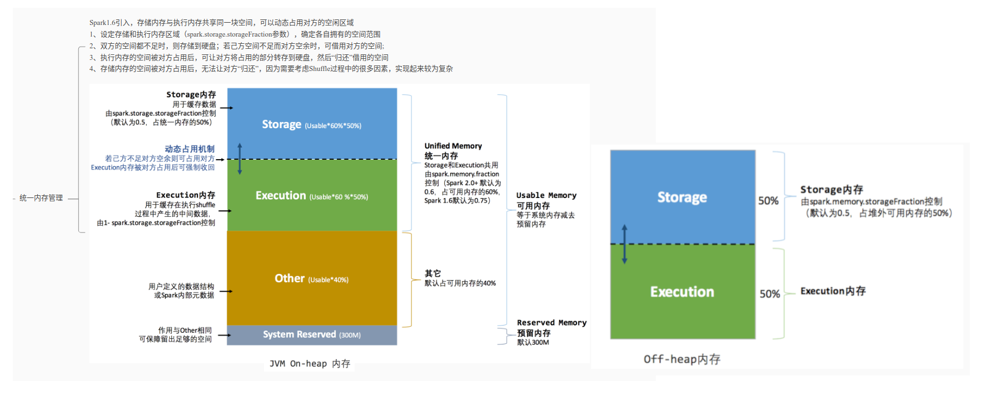

Ch10-Spark 之内存管理
June 20, 2019
Spark 作为一个以擅长内存计算为优势的计算引擎，内存管理方案是其非常重要的模块；Spark 的内存可以大体归为两类：execution（运行内存）和 storage（存储内存），前者包括 shuffles、joins、sorts 和 aggregations 所需内存，后者包括 cache 和节点间数据传输所需内存；
在 Spark 1.5 和之前版本里（Static Memory Manager），运行内存和存储内存是静态配置的，不支持借用；Spark 1.6 之后（Unified Memory Manager）引入的统一内存管理机制，与静态内存管理的区别在于存储内存和执行内存共享同一块空间，可以动态占用对方的空闲区域，提供更好的性能。它们可以通过参数 spark.memory.useLegacyMode=true/false 配置。
1. Static Memory Manager #
1.1 基本介绍 #
Spark 最原始的内存管理模式，默认通过系统固定的内存配置参数，分配相应的 Storage、Execution 等内存空间，支持用户自定义修改配置。
堆内内存空间整体被分为 Storage(存储内存)、Execution(执行内存)、Other(其他内存) 三部分，默认按照 6:2:2 的比率划分。其中 Storage 内存区域参数：spark.storage.memoryFraction(默认为 0.6)，Execution 内存区域参数：spark.shuffle.memoryFraction(默认为 0.2)。Other 内存区域主要用来存储用户定义的数据结构、Spark 内部元数据，占系统内存的 20%。
- Storage 内存区域中，10% 的大小被用作 Reserved 预留空间，防止内存溢出情况，由参数：
spark.shuffle.safetyFraction(默认 0.1) 控制。90% 的空间当作可用的 Storage 内存，这里是 Executor 进行 RDD 数据缓存和 broadcast 数据的内存区域，参数和 Reserved 一致。还有一部分 Unroll 区域，这一块主要存储 Unroll 过程的数据，占用 20% 的可用 Storage 空间。 - Execution 内存区域中，20% 的大小被用作 Reserved 预留空间，防止 OOM 和其他内存不够的情况，由参数：
spark.shuffle.safetyFraction(默认 0.2) 控制。80% 的空间当作可用的 Execution 内存，缓存 shuffle 过程的中间数据，参数：spark.shuffle.safetyFraction(默认 0.8)。
堆外内存默认为 384M，由系统参数 spark.yarn.executor.memoryOverhead 设定。整体内存分为 Storage 和 Execution 两部分，此部分分配和堆内内存一致，由参数：spark.memory.storageFaction 决定。堆外内存一般存储序列化后的二进制数据 (字节流)，在存储空间中是一段连续的内存区域，其大小可精确计算，故此时无需设置预留空间。
1.2 计算公式 #
可用的存储内存 =
systemMaxMemory
* spark.storage.memoryFraction
* spark.storage.safetyFraction
可用的执行内存 =
systemMaxMemory
* spark.shuffle.memoryFraction
* spark.shuffle.safetyFraction
2. Unified Memory Manager #
2.1 基本介绍 #
为了解决 (Static Memory Manager) 静态内存管理的内存失衡等问题，Spark 在 1.6 之后使用了一种新的内存管理模式—Unified Memory Manager(统一内存管理)。在新模式下，移除了旧模式下的 Executor 内存静态占比分配，启用了内存动态占比机制，并将 Storage 和 Execution 划分为统一共享内存区域。

堆内内存整体划分为 Usable Memory(可用内存) 和 Reversed Memory(预留内存) 两大部分。其中预留内存作为 OOM 等异常情况的内存使用区域，默认被分配 300M 的空间。可用内存可进一步分为 (Unified Memory) 统一内存和 Other 内存其他两部分，默认占比为 6:4。
统一内存中的 Storage(存储内存) 和 Execution(执行内存) 以及 Other 内存，其参数及使用范围均与静态内存模式一致，不再重复赘述。只是此时的 Storage、Execution 之间启用了动态内存占用机制。
2.1 动态内存占用机制 #
- 设置内存的初始值，即 Execution 和 Storage 均需设定各自的内存区域范围 (默认参数 0.5)
- 若存在一方内存不足，另一方内存空余时，可占用对方内存空间
- 双方内存均不足时，需落盘处理
- Execution 内存被占用时，Storage 需将此部分转存硬盘并归还空间
- Storage 内存被占用时，Execution 无需归还
堆外内存默认值为 384M，这个和静态管理模式一致。整体分为 Storage 和 Execution 两部分，且启用动态内存占用机制，其中默认的初始化占比值均为 0.5。
2.3 计算公式 #
可用的存储&执行内存 =
(systemMaxMemory -ReservedMemory)
* spark.memoryFraction
* spark.storage.storageFraction
(启用内存动态分配机制，己方内存不足时可占用对方)